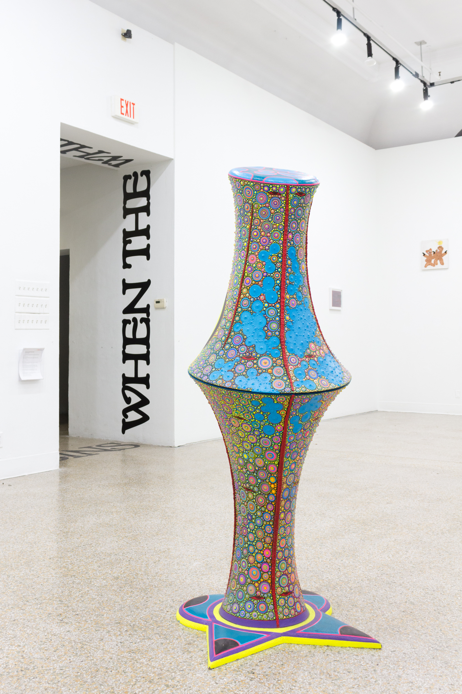

This group exhibition of Philadelphia artists is the culminating gesture of the Applied Curatorial Practices class taught by The Anderson Curator/Director Chase Westfall. The class is made up of six undergraduate VCUarts students who were nominated to participate by their respective departments. "When the Whirlwind Begins" offers a thematic survey of some of the most relevant, challenging, and exciting work being made in Philadelphia today. The exhibition explores the energy of transformation that emerges in times of chaos and change. Artists were selected through student research and a series of site and studio visits made in Philadelphia during the Fall semester.

Hello this worked too
Hello this worked too, actually